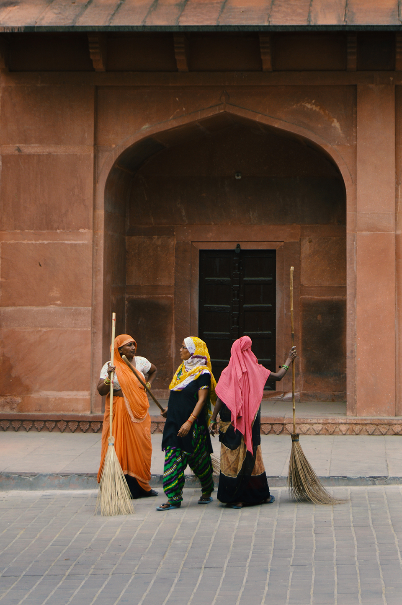

Exploring India
"India is a vast symphony of colors, where the hues of tradition and modernity dance together, creating a canvas that captures the spirit of a nation pulsating with diversity." - Amitabh Bachchan
Taj Mahal & Agra Fort ****
The Taj Mahal and Agra Fort, UNESCO World Heritage Sites in India, embody rich history and architecture. The Taj Mahal, a white marble mausoleum, symbolizes love, built by Emperor Shah Jahan in memory of his wife Mumtaz Mahal. Agra Fort, a red sandstone fortress by Emperor Akbar, served as the main residence for Mughal emperors. Together, they epitomize India's cultural heritage and imperial legacy.
Delhi ****
Delhi, the vibrant capital of India, is a city that encapsulates a rich blend of history, culture, and modernity. Amidst its bustling streets and historic landmarks, there exists a unique initiative known as the "School Under the Bridge." This heartwarming project brings education to underprivileged children. I spent some time volunteering at the school as an English tutor. The school not only imparts academic knowledge but also fosters a sense of hope and community, making a profound impact on the lives of these children.


Amritsar ****
Amritsar, a city in the northwestern Indian state of Punjab, is steeped in historical and cultural significance. The iconic Golden Temple, also known as Harmandir Sahib, stands as the spiritual heart of Sikhism and attracts pilgrims and visitors from around the world. Amritsar is also renowned for its vibrant street life, delectable Punjabi cuisine, and the lively bazaars around the temple, offering a sensory delight for those exploring its streets.